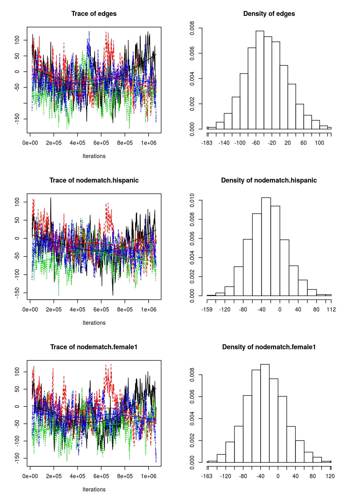
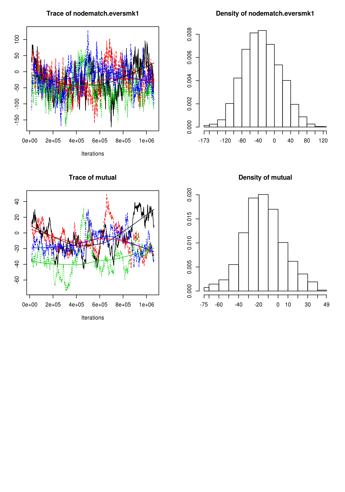

5.3 Model Goodness-of-Fit
In raw terms, once each chain has reach stationary distribution, we can say that there are no problems with autocorrelation and that each sample point is iid. This implies that, since we are running the model with more than 1 chain, we can use all the samples (chains) as a single dataset.
Recent changes in the ergm estimation algorithm mean that these plots can no longer be used to ensure that the mean statistics from the model match the observed network statistics. For that functionality, please use the GOF command: gof(object, GOF=~model).
—?ergm::mcmc.diagnostics
Since ans0 is the one model which did best, let’s take a look at it’s GOF statistics. First, lets see how the MCMC did. For this we can use the mcmc.diagnostics function including in the package. This function is actually a wrapper of a couple of functions from the coda package (Plummer et al. 2006). This is what is called under the hood:
Empirical means and sd, and quantiles:
summary(ans0$sample)## ## Iterations = 16384:1063936 ## Thinning interval = 1024 ## Number of chains = 4 ## Sample size per chain = 1024 ## ## 1. Empirical mean and standard deviation for each variable, ## plus standard error of the mean: ## ## Mean SD Naive SE Time-series SE ## edges -32.32 51.14 0.7990 3.557 ## nodematch.hispanic -26.81 39.08 0.6106 2.879 ## nodematch.female1 -28.03 44.92 0.7018 3.678 ## nodematch.eversmk1 -30.99 45.59 0.7123 3.420 ## mutual -14.35 20.47 0.3199 3.120 ## ## 2. Quantiles for each variable: ## ## 2.5% 25% 50% 75% 97.5% ## edges -128 -68 -35 1 75 ## nodematch.hispanic -100 -54 -27 -2 53 ## nodematch.female1 -115 -59 -29 2 65 ## nodematch.eversmk1 -116 -63 -33 1 59 ## mutual -55 -27 -16 -1 29Cross correlation:
coda::crosscorr(ans0$sample)## edges nodematch.hispanic nodematch.female1 ## edges 1.0000000 0.7842851 0.8454275 ## nodematch.hispanic 0.7842851 1.0000000 0.6875136 ## nodematch.female1 0.8454275 0.6875136 1.0000000 ## nodematch.eversmk1 0.8278077 0.6009145 0.6802329 ## mutual 0.6761018 0.5362456 0.6581912 ## nodematch.eversmk1 mutual ## edges 0.8278077 0.6761018 ## nodematch.hispanic 0.6009145 0.5362456 ## nodematch.female1 0.6802329 0.6581912 ## nodematch.eversmk1 1.0000000 0.6111560 ## mutual 0.6111560 1.0000000Autocorrelation: Just for now, we will only take a look at autocorrelation for chain 1 only. Autocorrelation should be rather low (in a general MCMC setting). If autocorrelation is high, then it means that your sample is not idd (no markov property). A way out to solve this is thinning the sample.
coda::autocorr(ans0$sample)[[1]]## , , edges ## ## edges nodematch.hispanic nodematch.female1 ## Lag 0 1.0000000 0.8219687 0.8705328 ## Lag 1024 0.8897580 0.7344981 0.7849176 ## Lag 5120 0.6125344 0.5093458 0.5843733 ## Lag 10240 0.4944537 0.4263616 0.5010519 ## Lag 51200 0.2553223 0.2028499 0.2945153 ## nodematch.eversmk1 mutual ## Lag 0 0.8679762 0.6494130 ## Lag 1024 0.7854503 0.6389852 ## Lag 5120 0.5671411 0.5952745 ## Lag 10240 0.4775676 0.5432361 ## Lag 51200 0.2399202 0.3539473 ## ## , , nodematch.hispanic ## ## edges nodematch.hispanic nodematch.female1 ## Lag 0 0.8219687 1.0000000 0.7213715 ## Lag 1024 0.7273184 0.8790036 0.6501736 ## Lag 5120 0.4679330 0.5328138 0.4685746 ## Lag 10240 0.3548131 0.3719475 0.3735284 ## Lag 51200 0.2275837 0.2027639 0.2450665 ## nodematch.eversmk1 mutual ## Lag 0 0.6933735 0.5332499 ## Lag 1024 0.6242548 0.5214353 ## Lag 5120 0.4278511 0.4686949 ## Lag 10240 0.3486120 0.4199291 ## Lag 51200 0.2193803 0.2047705 ## ## , , nodematch.female1 ## ## edges nodematch.hispanic nodematch.female1 ## Lag 0 0.8705328 0.7213715 1.0000000 ## Lag 1024 0.7882288 0.6530082 0.9067042 ## Lag 5120 0.5848867 0.4701031 0.6960912 ## Lag 10240 0.5143759 0.4415248 0.6162009 ## Lag 51200 0.2943576 0.2717081 0.3756573 ## nodematch.eversmk1 mutual ## Lag 0 0.7737254 0.6670677 ## Lag 1024 0.7116355 0.6624944 ## Lag 5120 0.5435839 0.6422426 ## Lag 10240 0.4804301 0.6076076 ## Lag 51200 0.2807997 0.3770320 ## ## , , nodematch.eversmk1 ## ## edges nodematch.hispanic nodematch.female1 ## Lag 0 0.8679762 0.6933735 0.7737254 ## Lag 1024 0.7848037 0.6274016 0.7117444 ## Lag 5120 0.5581929 0.4628434 0.5535105 ## Lag 10240 0.4779814 0.3987335 0.4923237 ## Lag 51200 0.2846086 0.2285842 0.3260756 ## nodematch.eversmk1 mutual ## Lag 0 1.0000000 0.5893853 ## Lag 1024 0.9073188 0.5852995 ## Lag 5120 0.6557095 0.5659845 ## Lag 10240 0.5476628 0.5493667 ## Lag 51200 0.2846972 0.4000402 ## ## , , mutual ## ## edges nodematch.hispanic nodematch.female1 ## Lag 0 0.6494130 0.5332499 0.6670677 ## Lag 1024 0.6513036 0.5378887 0.6639583 ## Lag 5120 0.6380464 0.5446367 0.6412776 ## Lag 10240 0.6214549 0.5353477 0.6214122 ## Lag 51200 0.3647324 0.2297713 0.4240353 ## nodematch.eversmk1 mutual ## Lag 0 0.5893853 1.0000000 ## Lag 1024 0.5878446 0.9884291 ## Lag 5120 0.5696277 0.9396082 ## Lag 10240 0.5458346 0.8806506 ## Lag 51200 0.2897837 0.3673476Geweke Diagnostic:
coda::geweke.diag(ans0$sample)## [[1]] ## ## Fraction in 1st window = 0.1 ## Fraction in 2nd window = 0.5 ## ## edges nodematch.hispanic nodematch.female1 ## 1.2158 1.9078 1.0548 ## nodematch.eversmk1 mutual ## 1.6781 0.4969 ## ## ## [[2]] ## ## Fraction in 1st window = 0.1 ## Fraction in 2nd window = 0.5 ## ## edges nodematch.hispanic nodematch.female1 ## 1.451 4.109 2.268 ## nodematch.eversmk1 mutual ## 1.108 1.478 ## ## ## [[3]] ## ## Fraction in 1st window = 0.1 ## Fraction in 2nd window = 0.5 ## ## edges nodematch.hispanic nodematch.female1 ## 1.1445 0.3823 -1.4859 ## nodematch.eversmk1 mutual ## 1.9638 0.3500 ## ## ## [[4]] ## ## Fraction in 1st window = 0.1 ## Fraction in 2nd window = 0.5 ## ## edges nodematch.hispanic nodematch.female1 ## -0.07832 1.71294 0.62034 ## nodematch.eversmk1 mutual ## -1.35149 -1.05875(not included) Gelman Diagnostic:
coda::gelman.diag(ans0$sample)## Potential scale reduction factors: ## ## Point est. Upper C.I. ## edges 1.23 1.60 ## nodematch.hispanic 1.13 1.36 ## nodematch.female1 1.13 1.35 ## nodematch.eversmk1 1.21 1.58 ## mutual 1.42 2.08 ## ## Multivariate psrf ## ## 1.41
plot(ans0$sample)
If we called the function mcmc.diagnostics this message appears at the end:
MCMC diagnostics shown here are from the last round of simulation, prior to computation of final parameter estimates. Because the final estimates are refinements of those used for this simulation run, these diagnostics may understate model performance. To directly assess the performance of the final model on in-model statistics, please use the GOF command: gof(ergmFitObject, GOF=~model).
—-
mcmc.diagnostics(ans0)
Not that bad! First, observe that in the plot we see 4 different lines, why is that? Well, since we were running in parallel using 4 cores the algorithm actually ran 4 different chains of the MCMC algorithm. An eyeball test is to see if all the chains moved at about the same place, if we have that we can start thinking about model convergence from the mcmc perspective.
What would be an indicator of no-convergence? Well, if you see something like this:
# Computing and printing GOF estatistics
ans_gof <- gof(ans0)
ans_gof##
## Goodness-of-fit for in-degree
##
## obs min mean max MC p-value
## 0 13 0 1.88 6 0.00
## 1 34 3 9.13 17 0.00
## 2 37 9 21.57 33 0.00
## 3 48 27 40.08 58 0.22
## 4 37 39 57.04 72 0.00
## 5 47 51 65.97 87 0.00
## 6 42 46 62.97 86 0.00
## 7 39 37 53.25 69 0.04
## 8 35 25 41.38 55 0.24
## 9 21 17 27.95 41 0.20
## 10 12 7 16.99 27 0.24
## 11 19 3 10.43 20 0.02
## 12 4 0 4.89 11 1.00
## 13 7 0 2.54 9 0.04
## 14 6 0 1.05 4 0.00
## 15 3 0 0.50 3 0.04
## 16 4 0 0.20 3 0.00
## 17 3 0 0.12 1 0.00
## 18 3 0 0.04 1 0.00
## 19 2 0 0.01 1 0.00
## 20 1 0 0.01 1 0.02
## 22 1 0 0.00 0 0.00
##
## Goodness-of-fit for out-degree
##
## obs min mean max MC p-value
## 0 4 0 1.95 5 0.24
## 1 28 3 8.74 17 0.00
## 2 45 10 22.41 36 0.00
## 3 50 26 40.35 56 0.08
## 4 54 40 56.78 76 0.70
## 5 62 43 64.59 79 0.88
## 6 40 46 63.32 82 0.00
## 7 28 39 53.87 69 0.00
## 8 13 27 41.03 53 0.00
## 9 16 15 28.27 40 0.04
## 10 20 7 16.87 27 0.42
## 11 8 4 9.87 17 0.68
## 12 11 1 5.59 11 0.08
## 13 13 0 2.43 6 0.00
## 14 6 0 1.13 4 0.00
## 15 6 0 0.48 3 0.00
## 16 7 0 0.22 3 0.00
## 17 4 0 0.09 1 0.00
## 18 3 0 0.00 0 0.00
## 19 0 0 0.01 1 1.00
##
## Goodness-of-fit for edgewise shared partner
##
## obs min mean max MC p-value
## esp0 1032 1956 2220.50 2328 0
## esp1 755 166 232.46 397 0
## esp2 352 4 14.80 86 0
## esp3 202 0 0.75 16 0
## esp4 79 0 0.05 4 0
## esp5 36 0 0.00 0 0
## esp6 14 0 0.00 0 0
## esp7 4 0 0.00 0 0
## esp8 1 0 0.00 0 0
##
## Goodness-of-fit for minimum geodesic distance
##
## obs min mean max MC p-value
## 1 2475 2348 2468.56 2598 0.88
## 2 10672 12763 13933.53 15304 0.00
## 3 31134 51869 56724.28 62405 0.00
## 4 50673 76195 79277.10 82187 0.00
## 5 42563 14434 19124.93 24041 0.00
## 6 18719 466 1125.17 1964 0.00
## 7 4808 2 33.53 192 0.00
## 8 822 0 0.58 12 0.00
## 9 100 0 0.01 1 0.00
## 10 7 0 0.00 0 0.00
## Inf 12333 0 1618.31 4147 0.00
##
## Goodness-of-fit for model statistics
##
## obs min mean max MC p-value
## edges 2475 2348 2468.56 2598 0.88
## nodematch.hispanic 1615 1504 1588.54 1686 0.48
## nodematch.female1 1814 1727 1805.55 1905 0.90
## nodematch.eversmk1 1738 1622 1715.58 1808 0.66
## mutual 486 436 477.46 522 0.60# Plotting GOF statistics
plot(ans_gof)


References
Plummer, Martyn, Nicky Best, Kate Cowles, and Karen Vines. 2006. “CODA: Convergence Diagnosis and Output Analysis for Mcmc.” R News 6 (1): 7–11. https://journal.r-project.org/archive/.